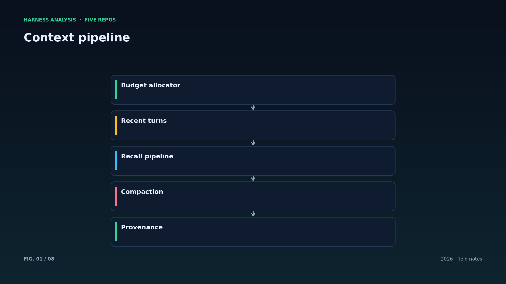
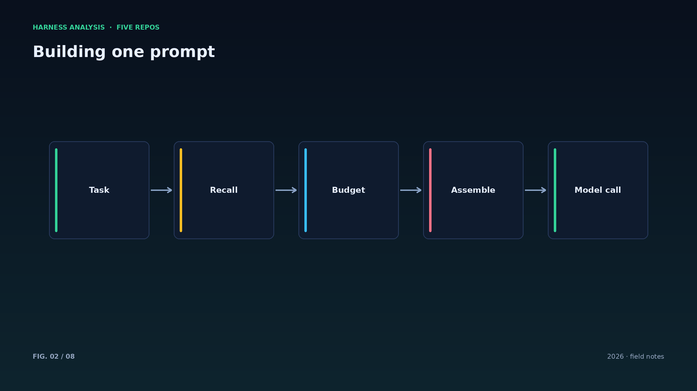
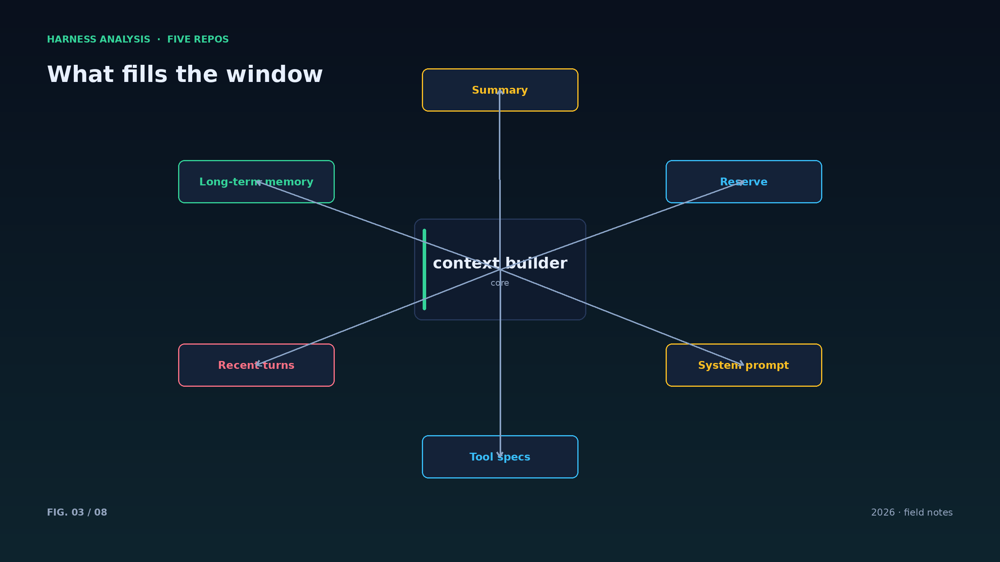
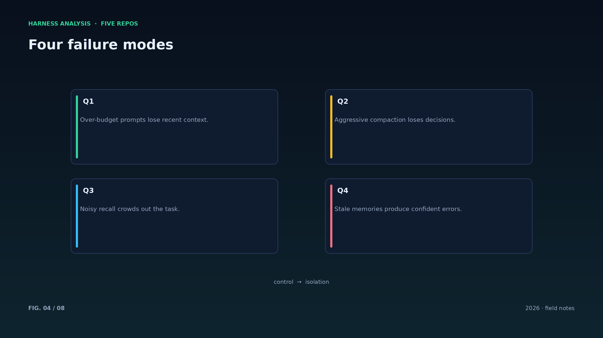
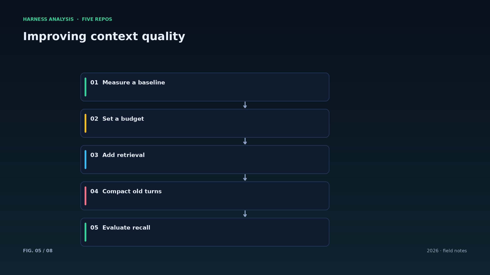
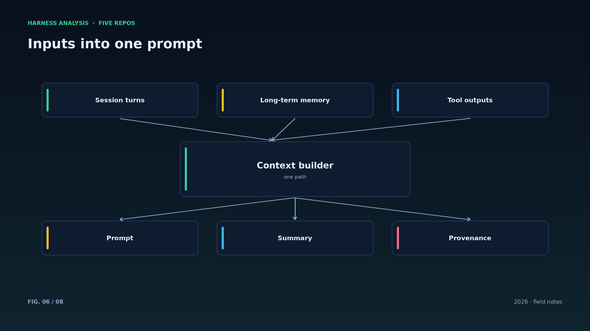
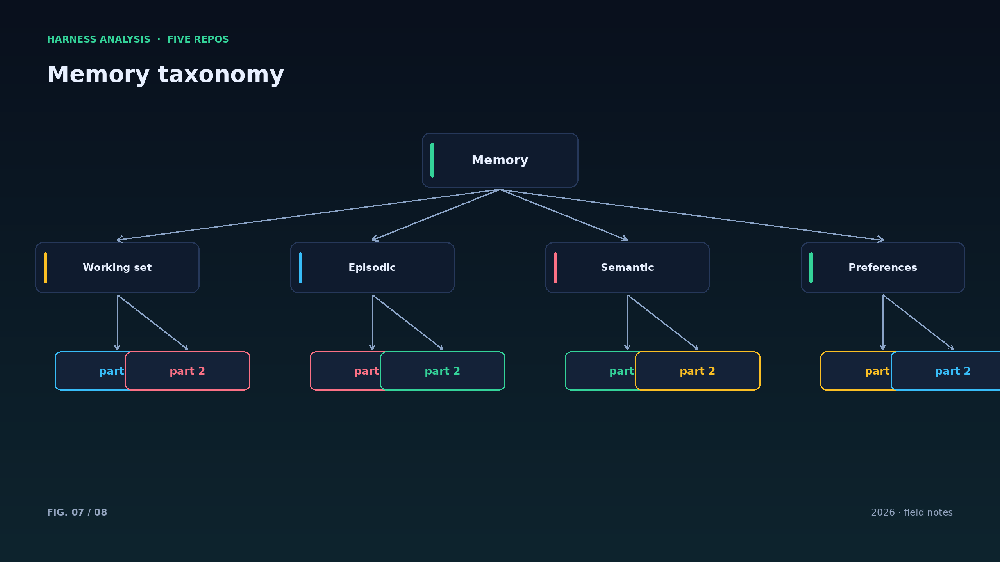
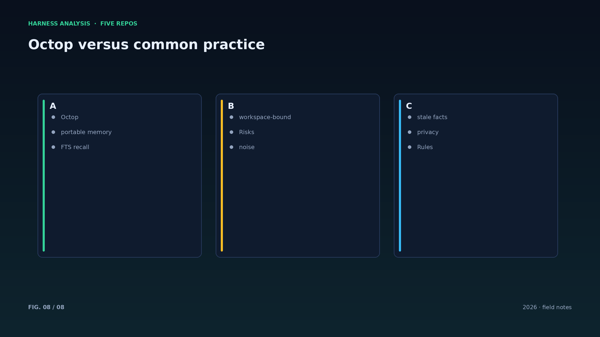

harness analysis · 07
上下文与记忆：预算、压缩与“记忆该跟谁走”
Context and Memory: Budgets, Compaction, and Who Owns the Memory
上下文窗口是预算，不是仓库。这一篇对照 Octop 的可携带记忆与常见的检索式上下文，讨论“记什么、怎么取、何时删”。
上下文管理的目标是让模型在有限窗口里看到最该看的东西。工程手段是预算分配：系统提示与工具描述是固定成本，最近几轮是高优先级，检索到的记忆是弹性部分，还要预留空间给输出。
压缩策略按代价排序：先丢弃低价值内容（重复的工具输出），再对旧轮次做结构化摘要（保留决策、改动与未决问题），最后才动用模型摘要。摘要要有固定 schema，否则格式漂移会让模型越读越乱。
Octop 的记忆设计强调“可携带”：数据跟工作区走，而不是锁在某个服务里。这在多 agent 场景很重要——换一个 agent 接管任务，记忆不必重建。
需要警惕的是检索噪音与陈旧事实：召回太多会污染上下文，召回太旧会让 agent 依据过时信息行动。实用做法是每条记忆带来源与时间，重排时把来源与新鲜度纳入打分。
记忆写入要有节制：只在“用户表达偏好、任务做出决策、会话结束”三个时机提炼，其余时间宁可少写。记忆越多，检索越难，噪音越大。
上下文里最好保留记忆的来源编号：一旦模型引用错误事实，可以顺着编号回溯到原始会话，审计与纠错都会快很多。
压缩策略要可观察：记录每次压缩前后的 token 数与摘要内容，才能判断压缩是否伤害了任务质量。
检索要做“负样本”测试：故意问一些不该被召回的问题，确认系统不会把无关记忆塞进上下文。
记忆的删除同样重要：用户要求遗忘时，要能从主库、索引与备份中一并删除，这是合规底线。
Architecture figures








ENGLISH
Context and Memory: Budgets, Compaction, and Who Owns the Memory
A context window is a budget, not a warehouse. This piece compares Octop's portable memory with retrieval-based context and asks what to store, how to recall, and when to forget.
Context management aims to show the model the most useful things in a limited window. The engineering tool is budgeting: system prompt and tool descriptions are fixed costs, recent turns are high priority, recalled memories are elastic, and output space must be reserved.
Compaction follows a cost order: drop low-value content (repeated tool output), summarize old turns into a fixed schema (decisions, changes, open questions), and only then let the model write a summary. The schema matters — drifting formats confuse the reader.
Octop's memory is deliberately portable: data travels with the workspace instead of being locked into a service. In multi-agent settings this matters — when another agent takes over, memory need not be rebuilt.
Beware retrieval noise and stale facts: recalling too much pollutes the prompt, recalling too old material makes agents act on outdated truths. A practical rule is to attach provenance and timestamps to every memory and include both in reranking.
Write memories sparingly: extract at preference statements, decisions and session ends; otherwise stay quiet. More memories make recall harder and noisier.
Make compaction observable: log token counts and summaries before and after so you can tell whether compression hurt task quality.
Test recall with negative samples: ask questions that should not retrieve anything and verify the system does not stuff unrelated memories into the prompt. Deletion matters too — forget means forget everywhere, including indexes and backups.